7 Community
7.1 Demographics
Key Points:
- Santa Barbara County’s population began to grow this year, reversing a three-year trend of population decline. However, the tri-county area as a whole is experiencing its fourth straight year of population decline.
- Net migration to Santa Barbara County has been steadily decreasing since 2016, with the largest decrease in the recorded data occurring in 2021.
- Santa Barbara’s white population is declining, while populations of other ethnicities are increasing.
7.1.1 Local Demographics
The tri-counties area is composed of Santa Barbara County, Ventura County, and San Luis Obispo Counties. In 2022, population growth is negative at -0.25%. Population growth for the tri-counties has not not returned to its peak in the recorded data of about 0.9% in 2013 and 2014. Santa Barbara County recorded positive population growth of 0.34%. Population growth in San Luis Obispo County was positive at 0.36%. Ventura County experienced negative population growth of -0.77%. The overall decline in the tri-counties population was therefore driven by Ventura County.
In Santa Barbara County specifically, unincorporated areas experienced the highest growth rate in 2022 at 4.51%. On the other hand, many areas of Santa Barbara County experienced negative growth. These areas include Buellton, Carpinteria, and Goleta. Among cities with a negative growth rate, Solvang faced the lowest growth rate, at -2.54%.


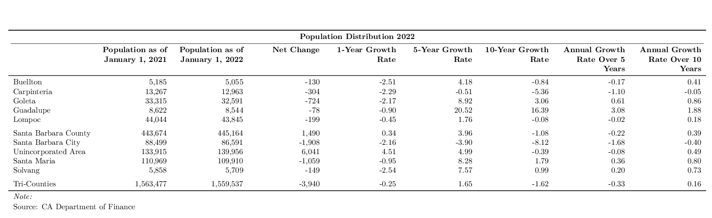
7.1.2 Components of Change
According to data from the California Department of Finance, the population in Santa Barbara County as of July 2021 was lower in July of 2020. The -1.23% population decrease from July 2020 to July 2021 was the largest decrease in the county population since the data began in 2011. While births in the county outnumbered deaths by 1,641 in 2021, net migration was negative at -7,179. Net migration in California as a whole was negative in 2021, with population growth of -0.44%.
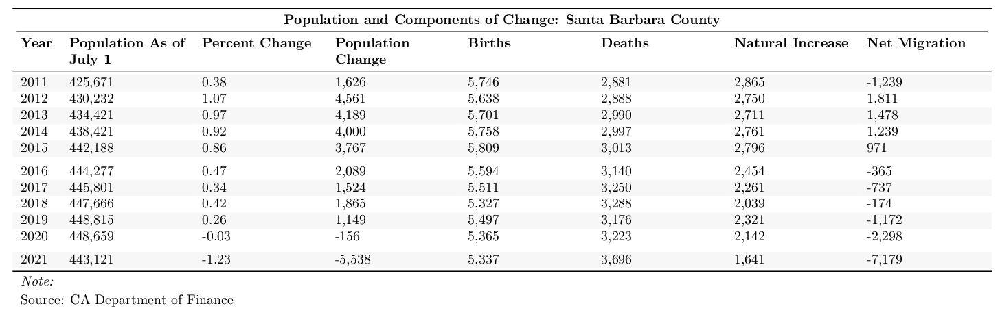
7.1.3 Demographic Detail
Incorporated areas of Santa Barbara County are expected to see population decrease to 449,300 in 2022, down from 450,900 in 2020. Within the decreasing population, there is no clear trend of groups of age demographics that are significantly increasing or decreasing. Similarly, gender groups do not indicate significant differences. However, change of population is seen more clearly in ethnicities in Santa Barbara County. The white population has decreased since 2016, while the Black, Asian and Hispanic populations have increased.
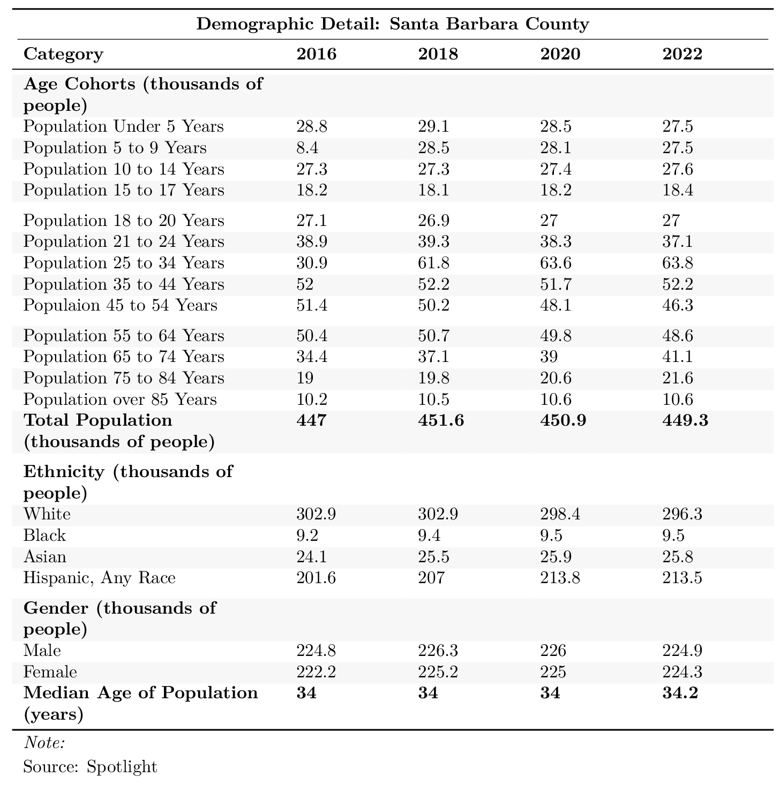
7.1.4 Median Age
The median age in the recorded areas of Santa Barbara County is expected to be 34.2 in 2022. Guadalupe has the lowest median age, at 28.88 years old, and Solvang has the highest median age at 48.64 years old.

7.1.5 Housing
According to the Department of Finance, there are a total of 160,333 housing units in Santa Barbara County in 2022. This is a 0.65% increase from the housing unit count of 159,296 last year in 2021. By comparison, the population increased by 0.34% from 2021 to 2022. Furthermore, the vacancy rate decreased by 0.31% from 6.39 to 6.37 in the past year. Housing density has decreased from 2.89 people per household in 2021 to 2.82 people per household in 2022.
South Santa Barbara County has a higher percentage of one- and two-person households than North Santa Barbara County, while North Santa Barbara County has higher percentages of three-, four-, five-, six-, and seven-person households. Two-person households are the most common all across Santa Barbara County, accounting for over 30% of households in both North and South Santa Barbara County. Family households outnumber non-family households in every city in Santa Barbara County, with the smallest percentage of non-family households in Guadalupe.
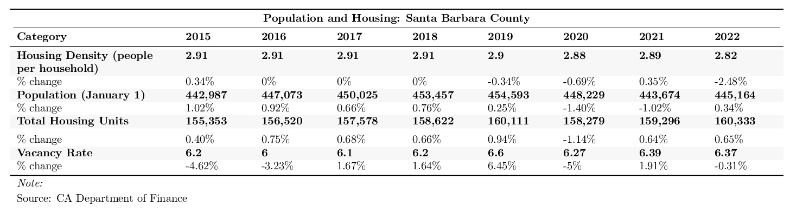


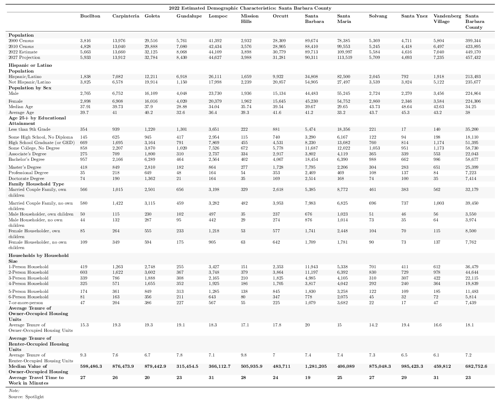
7.2 Crime
Key Points:
- Santa Barbara County’s violent crime rate increased from 2.68 to 2.72 crimes per 1,000 persons between 2018 and 2019.
- Buellton maintains the lowest violent crime while Lompoc remains the leader in violent crime rates.
- Lompoc has the lowest property crime rate; and Buellton had the highest in 2019.
Over the past 10 years (2009-2019), both property and violent crime rates have declined county wide, falling by -50.67% and -37.89%, respectively. Compared to the United States as a whole, Santa Barbara County had 8.96 fewer property crimes per 1,000 persons in 2019, with property crime rates of 21.1 and 12.14, respectively. In terms of violent crime rates, the United States and Santa Barbara County had 12.14 and 3.67 crimes per 1,000 persons in 2019, respectively. In what follows, we discuss these trends and further break down the composition of crime.
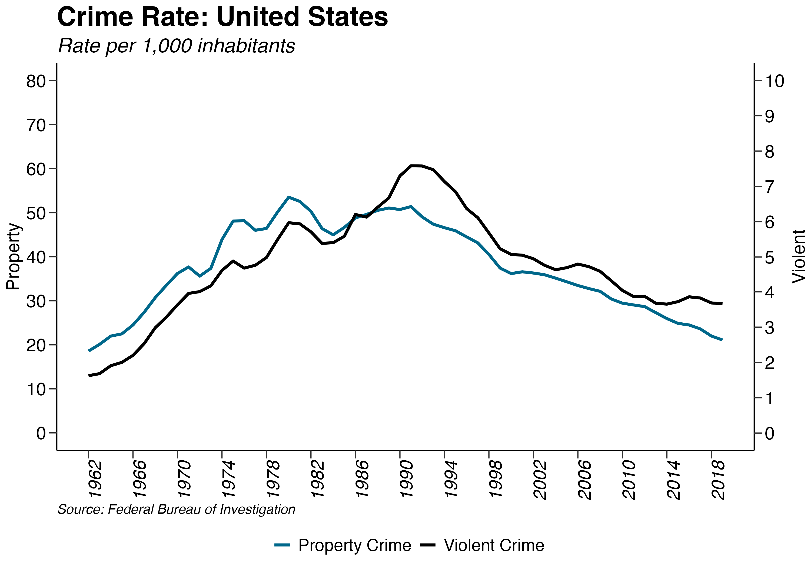
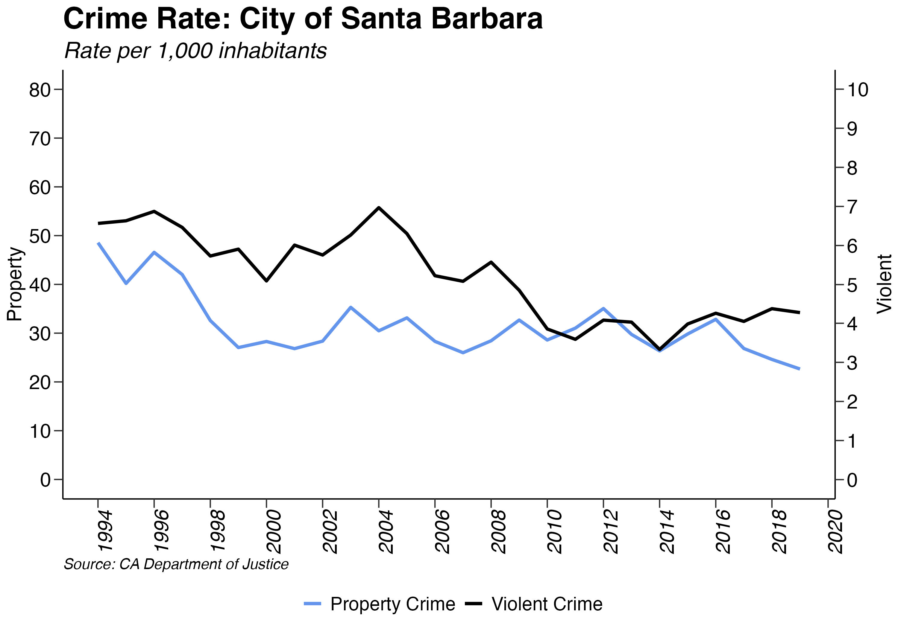
7.2.1 Property Crime
As defined by The California Department of Justice, property crime is divided into three separate categories: burglary, motor vehicle theft, and larceny-theft. Larceny-Theft made up 68% of property crimes in 2019, totaling 4,992 crimes. The high percentage of these types of crimes is most likely attributed to the ease at which people can steal and resell small items through shoplifting, purse snatching, building and bicycle theft, etc. Burglary, which totaled rformat(cN18,big.mark=‘,’)` and constituted 17% of the all property crime, is the second most perpetrated type of property crime. Motor Vehicle Theft made up the smallest category at 14%.
Santa Barbara County property crime rates decreased by -46.4% in 2019 , continuing a downward trend.. Year is the only exception to this decrease, Buellton is the only exception to this decrease, Carpinteria is the only exception to this decrease, Goleta is the only exception to this decrease, Santa Barbara is the only exception to this decrease. Lompoc had the largest decrease, with property crimes falling by -6.49%. Year has maintained the smallest property crime rate and Goleta has the highest property crime rates in the county. Each experienced a crime rate of 9.9 and 24.22 in 2019.
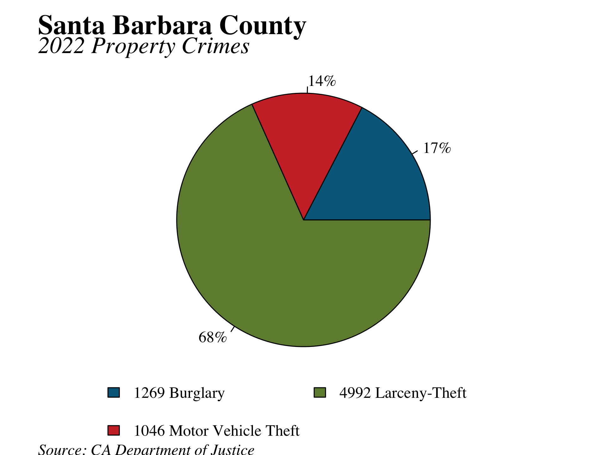
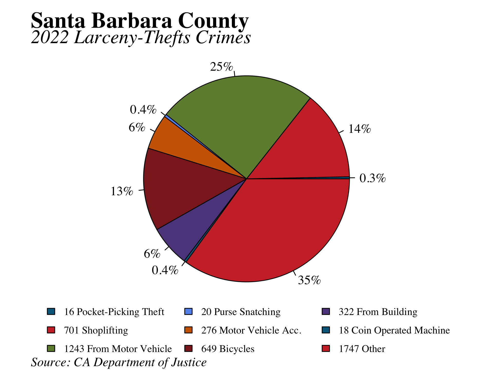
7.2.2 Violent Crime
Larceny-Theft made up 68% of property crimes in 2019, totaling 4,992 crimes. The high percentage of these types of crimes is most likely attributed to the ease at which people can steal and resell small items through shoplifting, purse snatching, building and bicycle theft, etc. Burglary, which totaled rformat(cN18,big.mark=‘,’)` and constituted 17% of the all property crime, is the second most perpetrated type of property crime. Motor Vehicle Theft made up the smallest category at 14%.
Violent crime is separated into four sections: homicide, rape, robbery, and aggravated assault. Aggravated made up 66% of violent crimes in Santa Barbara County during 2019, totaling 1,006 and thereby making it the largest category of violent crimes within the county. Motor Vehicle Theft made up the smallest fraction of violent crimes at 14%, with just 1,046 counts. Robbery and Homicide made up the second and third largest categories of violent crimes, respectively. In total, the number of violent crimes per 1,000 persons in Santa Barbara County increased from 2.68 in 2018 to 2.72 in 2019.
Year is the only exception to this increase, Lompoc is the only exception to this increase, Santa Maria is the only exception to this increase. Goleta had the largest increase, with violent crimes rising by 248.41%. has maintained the smallest violent crime rate and has the highest violent crime rates in the county. Each experienced a crime rate of 9.9 and 24.22 in 2019.
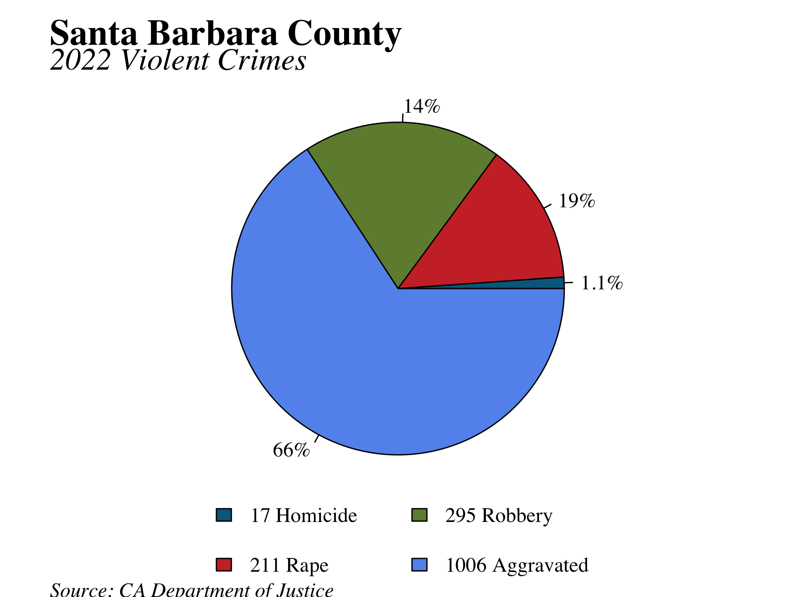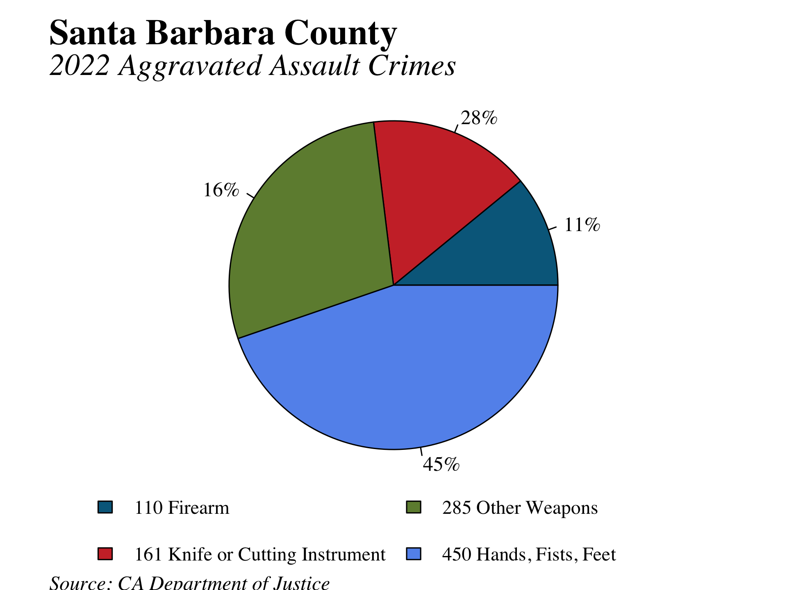
7.3 Education
Key Points:
- Charter school enrollment in Santa Barbara County, which had been growing for several years, is higher now than in 2018-2019.
- Enrollment at the University of California, Santa Barbara has declined slightly from its record high in Fall 2019.
- The high school dropout rate of 3.8% in Santa Barbara County in the 2020-21 school year was substantially lower than the California average of 6.4%.
Public school enrollment in Santa Barbara County dropped by 0.5% between the 2020-21 and 2021-22 school years, a decrease of 333 students. The California Department of Education predicts that public school enrollment will shrink by 3.2 between 2022 and 2030. Is the decline driven by a decrease in the number of school-age children or by a shift to private schools? Private school enrollment has declined in Santa Barbara County since 2018, and in 2020 it reached 4796, its lowest point since the data began in 2014. Therefore, the decline in public school enrollment appears to be driven by a decrease in the number of school-age children in Santa Barbara County. Charter schools, which are considered public schools, have recently gained popularity: charter school enrollment has increased from its 2018-2019 peak of 7.2% of total enrollment to 6.6% of total enrollment.


The University of California, Santa Barbara enrolled 26,124 students in Fall 2021, a 0.7% decrease from the record high of 26,314 in Fall 2019. Allan Hancock College registration increased from 11,277 in 2020 to 12,193 in 2021, remaining well below its peak of 16,066 in Fall 2008. Santa Barbara City College enrolled 13,855 students in the fall, a 1.4% increase from Fall 2020 but still 30% below its peak enrollment in Fall 2009.


7.3.1 Expenditures on Education
Using the following figures, we display the year-to-year changes in education expenditures at the state, county, and district level. These expenditures include the following costs: salaries, benefits, acquisitions, and construction. To measure these changes, we use the cost per average daily attendance (ADA), which measures the number of days of student attendance divided by the total number of days of instruction.
At the state and county levels, expenditures per ADA continued the upward trend that began in 2013. For the 2020-21 school year, expenditures per ADA for the state and county rose by 4.3% and 4.9%, respectively. Within Santa Barbara county, spending per student varies substantially across school districts. Six of the 20 districts experienced declines in spending per ADA: Blochman Union Elementary, Buellton Union Elementary, Cold Spring Elementary, Goleta Union Elementary, Los Olivos Elementary, and Solvang Elementary. Vista Del Mar Union Elementary has the highest cost per ADA.
When looking at the growth trend of school spending, it is helpful to also consider indicators such as average class size, student teacher ratios, and other performance measures to better understand the trend. For example, the increase in the cost per ADA could be attributed to either an increase in expenditures or a fall in enrollment. The rise for this year may be due in part to the decline in enrollment if education spending has not sufficiently adjusted to the decrease. Alternatively, general increases in spending could account for increased costs, although these changes cannot be directly observed. Thus, we cannot determine which of these factors is the driving force.


7.3.2 Performance Indicators
Created by the Smarter Balanced Assessment Consortium (SBAC), the California Assessment of Student Performance Progress (CASSPP) replaced the STAR exam in the Spring of 2014 due to state efforts to change testing from multiple choice and memorization to more interactive questions that require critical analysis skills. Since the trial run in 2013-14, the 2020-21 academic year is the seventh year of publicly released results.
Santa Barbara County students performed far better in English than in either math or science: 46.5% of students met or exceeded the standard in English, compared with 33.7% in math and 22.5% in science. Although English had the lowest percentage of students who met or exceeded the standard, the percentage of students in the lowest-scoring category of “Standard Not Met” was highest for math at 40.5%. A higher percentage of 11th grade students met or exceeded standards in English than 3rd or 5th grade students.


In 2013, the California State Board of Education adopted the Next Generation Science Standards which focuses on creating a shift in science education to have students express more conceptual and applied understanding of the material. California Science Test (CAST) results were made available for the first cohort of students in 2019. The 2020-21 results show that the majority of students (55.4%) nearly meet the standard for science, while 18.4% meet the standard and only 4.1% exceed it. Students younger than grade 5 are not required to take the CAST exam.

The California High School Exit Examination (CAHSEE) was made to demonstrate a competency of English-language arts and mathematics and was required in order to earn a high school diploma. The CAHSEE was suspended in October 15 and has not been reinstated. Furthermore, our usual data for SAT scores by section is no longer available due to revisions in the test. Therefore, we are unable to present SAT testing data for the 2020-21 academic year.
The four-year high school graduation rate in Santa Barbara County was 89.5% in 2021, exceeding the statewide rate of 83.6%. Out of 4657 students who graduated in 2021, 43% met the standards required to attend a University of California or California State University school. Santa Barbara County has a high school dropout rate of 3.8%, compared with the statewide rate of 6.4%. Among Santa Barbara County school districts, Santa Maria Joint Union High has the highest graduation rate of 92.5%. Lompoc Unified has the most students who received a Special Education Certificate of Completion.


7.4 Environment
Key Points:
- Santa Barbara Country experienced a “Dry Year” with 48% of typical rainfall
- Total energy use in Santa Barbara County down in 2020
- Water levels in Santa Barbara County remained stable in 2019
- In 2021, Santa Barbara County had 1 days exceeding the 8-hour state ozone standard.
7.4.1 Annual Rainfall
2020 experienced 48% of normal water-year rainfall, measured from September 1, 2019 to August 31, 2020. 2020 is therefore classified as a “Dry Year,” which Santa Barbara County defines a year that has received less than 80% of normal rainfall. Santa Barbara County has returned to a drought after decreasing rainfall since 2018. Santa Maria each saw declines in rainfall, Santa Ynez each saw declines in rainfall, Santa Barbara each saw declines in rainfall compared to 2019. Santa Barbara received 16.47 inches of rainfall, 90% of its mean annual rainfall of 18.34 inches. Santa Maria saw 11.45 inches of rain, 125% of its mean annual rainfall of 13.15 inches. Lastly, Santa Ynez received 15.13 inches of rain, 103% of its mean annual rainfall of 15.96 inches. The 2020 water-year sees continued below average rainfall for all three cities after 2019 saw slightly below average rainfall in all three cities.

7.4.2 Water Reservoirs
Cachuma reservoir, Gibraltar reservoir, and Jameson reservoir are Santa Barbara County’s major reservoirs for water. Reservoir levels are measured in acre-feet; one acre-foot is approximately 325,851 gallons. Between 2019-01-01 and 2020-01-01, reservoir levels in the Cachuma reservoir increased by 80205, increased by 1034 in the Jameson reservoir, and decreased by -1032 in the Gibraltar reservoir. These changes can simply be put into perspective by examining the overall capacity levels of each reservoir. The Cachuma reservoir experienced an increase in water capacity from 30.8% to 72.3%. Jameson reservoir’s capacity increase from 57.5% to 82.3% of its maximum water levels. Lastly, the smallest reservoir, Gibraltar, experienced a change in water storage, falling from 61.3% to 35.2% of total capacity.
| 2018 Avg (acre-feet) | 2019 Avg (acre-feet) | 1-Year Change | 2-Year Change | 5-Year Change | |
|---|---|---|---|---|---|
| Cachuma | 70,656 | 132,951 | 88.2% | 69.4% | 96.6% |
| Gibraltar | 3,392 | 3,245 | -4.3% | -12.6% | 191.2% |
| Jameson | 3,014 | 4,368 | 44.9% | 77.2% | 213.5% |


7.4.3 Water Consumption
In 2020, the amount of gallons of water consumed per day for residential purposes within Santa Barbara County increased by an average of 30.64% across all reporting agencies. Water consumption had been declining in the County since 2013, largely driven by regulation due to the mostly continual drought. Between 2020 and 2019, Santa Ynez experienced the largest increase in per-capita residential water consumption– 263.93%. On the other hand, Santa Barbara experienced the largest decline in per-capita residential water consumption– -74.61%. In terms of magnitude, personal daily water consumption varies widely between cities. Montecito and Santa Ynez stand at the upper end of water consumption at 256 and 222 gallons per day, respectively. Casmalia reported 43 gallons per day, the lowest consumption figure in the county.


7.4.4 Air Quality
The Santa Barbara Air Pollution Control District has a network of monitoring stations to record the concentration of various air pollutants. Air quality is presented in terms of the number of days the ozone level exceeded the state 8-hour standard of .070 parts per million. In the long view, Santa Barbara County has experienced air quality improvements, which can be seen in the declining number of state 1-hours and 8-hour ozone exceedance days that occurred between 1990 and 2019. 2021 experienced 0 days–down from 4 days in 2020– where ozone levels exceeded the state 1-hour standard. Moreover, 2021 experienced 1 day where the ozone level exceeded the state 8-hour standard. 2021’s 1 exceedance day marks one of the lowest levels since 1990, when the number of state 8-hour ozone exceedance days was 87.
National Ambient Air Quality Standards (NAAQS) monitor whether reqions in the United States meet certain health standards. These standards tell us how much of a substance can be in the air without causing harm based on proven medical research. In order to receive the attainment designation for regional ozone standards, local data must show that the 8-hour standard was not violated by more than one day per year on average during the previous three calendar years. In other words, regions must not have more than three total 8-hour exceedance days for three consecutive years. Santa Barbara County has experienced 1, 6, 1 exceedance days in 2021, 2020, 2019, respectively. As a result, Santa Barbara County does not currently acheive the attainment status according to NAAQS.

|
Ozone: Number of Days Above State 8-Hour Standard
|
||||||
|---|---|---|---|---|---|---|
|
Monitoring Station
|
2014
|
2015
|
2016
|
2017
|
2018
|
2019
|
| Carpinteria-Gobernador Road | 7 | 0 | 0 | 0 | 0 | 0 |
| El Capitan Beach | 1 | 0 | 2 | 0 | 0 | 1 |
| Goleta-Fairview | 3 | 0 | 1 | 0 | 0 | 0 |
| Las Flores Canyon #1 | 4 | 2 | 1 | 1 | 0 | 1 |
| Lompoc-HSandP | 1 | 0 | 0 | 1 | 0 | 0 |
| Lompoc-S H Street | 1 | 0 | 0 | 0 | 0 | 0 |
| Nojoqui Pass | 2 | 0 | 0 | 0 | 0 | 0 |
| Paradise Road-Los Padres National Forest | 1 | 0 | 1 | 0 | 0 | 1 |
| Santa Barbara-700 East Canon Perdido | 2 | 0 | 1 | 0 | 0 | 0 |
| Santa Maria-906 S Broadway | 0 | 0 | 0 | 0 | 0 | 0 |
| Santa Ynez-Airport Road | 0 | 0 | 0 | 0 | 0 | 0 |
| Vandenberg Air Force Base-STS Power | 3 | 0 | 0 | 0 | 0 | 0 |
| Countywide | 10 | 2 | 3 | 0 | 0 | 1 |
| Source: Santa Barbara County Air Pollution Control District | ||||||
7.4.5 Electricity Consumption
Santa Barbara County’s total energy use fell by -1.11% in 2020, declining from 2,794.511 gigawatt hours to 2,763.41 gigawatt hours. Residential electricity, which made up 0.3% of total electricity consumption in 2020, instead rose by 6.23%. The remaining category of electricity consumption, non-residential energy use, decreased by -4%. We should expect to continue seeing a decrease in energy consumption as Santa Barbara County establishes its own renewable sources to achieve 100% sustainable energy goals by 2030 – as voted on by the City Council in June 2017.